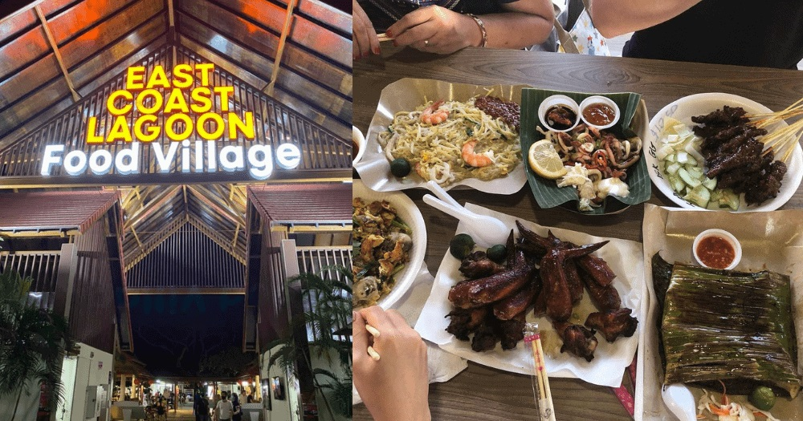

East Coast Park
A Guide to One of Singapore's Most Treasured Getaways

Themed "Recreation for All", East Coast Park offers an activity for EVERYONE! From playground fun, delicious eateries, and to simply relaxing along the coastline or beneath the swaying coconut trees, there's surely something for YOU to do!
With a total land size of 185 hectares and a beautiful coastline stretching over 15km , East Coast Park offers a wide range of recreational, sporting and eating opportunities for you and your family!
Here are five things you can do at East Coast Park!
Jump to:
Activities to Do in East Coast Park
Food Options at East Coast Park
How to Get to East Coast Park
Five Things You Can Do At East Coast Park

1. Cycling
East Coast Park is one of the BEST locations to cycle! With a Park Connector Network that stretches about 12.5km along the south-eastern coastline, East Coast Park is IDEAL for cycling. If you don't have a bicycle, you may easily rent one at one of the park's many rental stations!
You can also visit the Cyclist Park located at Area D. There are two cycling circuits available, one for beginners, and the other which consists more challenging features for intermediate cyclists. Find out more about Cyclist Park.

Gently countoured terrain for beginners at the Learner Circuit

More challenging obstacles for intermediate cyclists such as the zigzag columns (picture) at the Advanced Circuit

Pump track obstacle at the Advanced Circuit
2. Visit Coastal Playgrove
Coastal PlayGrove is East Coast Park's latest family-friendly destination with everything you need for a day of endless fun. The NParks FREE playground features the Play Tower, which is Singapore's tallest outdoor play feature, comprising a 4-storey vertical net play area dubbed the Vertical Challenge , as well as 2 exhilarating slides.
There is also a water play area which guarantees fun especially for the younger children, as they run through the numerous water jets and splash around the wading pool and streams.

Coastal Playgrove Playground at East Coast Park

Water Play area at Coastal Playgrove
Address: Area B, 902 East Coast Park Service Rd, (S)449874
3. Fish at Bedok Jetty
Stretching out more than 250m into the sea, Bedok Jetty is a popular angling spot! Come on down with your fishing rods and reels for a therapeutic fishing session with your family and friends!
The jetty is one of the few spots in Singapore where you may legally fish, so remember to practice good fishing etiquette! .
If you are not into fishing, Bedok Jetty is also a nice place to go for a stroll, and take in the scenery and sea breeze!

View of Bedok Jetty
Image credit: @dudeinglasses
Address: Carpark F1/East Coast Park Service Road, (S)449876
4. Wakeboard at Singapore Wake Park
Do you want to try something EXTRA-ORDINARY? Look no further by heading over to Singapore Wake Park, which is a cable-ski facilility established on East Coast Park's former swimming lagoon.
The park features three cable-systems that cater to and promises fun to riders of all skill levels! What are you waiting for? Get splashy and try something out-of-the-ordinary!

Wakeboarding at Singapore Wake Park
Address: Singapore Wake Park, 1206A East Coast Parkway, East Coast Lagoon, (S)449891 (Carpark E1),
Contact: 6636 4266
5. Dine-in at East Coast Lagoon Food Village
East Coast Lagoon Food Village is a must-visit spot for hawker food, and it is also a fantastic place to grab your fill of grilled seafood, barbecue chicken, satay and other local delicacies. There are also an array of drink stalls offering thirst-quenching fresh coconut and sugarcane juice!
It may get crowded, especially on weekends. To prevent any dissapointment, do arrive early to 'chope' a seat!

Address: 1220 East Coast Parkway, (S)468960
Other Food Options Include:
- Atmosphere Bistro
East Coast Park, Parkland Green, 920 East Coast Parkway, #01-25/26/27, (S)449875
Contact: 6440 9705 - McDonald's Marine Cove (Halal)
Marine Cove, 1000 East Coast Parkway East Coast Park, #01-05, (S)449876
Contact: 6243 0471 - My Briyani House (Halal)
Marine Cove, 1000 East Coast Parkway East Coast Park, #01-04, (S)449876
Contact: 6241 6636 - PS.Cafe
E1110 East Coast Parkway, Cyclist Park, #01-05/06/07, (S)449880
Contact: 6708 9288 - Tash Tish Tosh (Halal)
Marine Cove 1000 East Coast Parkway, #01-02, (S)449876
Contact: 8714 8677
How to Get to East Coast Park
By Car: The park is accessible via the East Coast Parkway (ECP) and East Coast Service Road, where there are more than 10 car parks across the length of the park! You can find more information on the carparks (e.g. locations and rates) here.
By Taxi/Grab/Gojek: There are plenty of car parks throughout the park where you can drop off. Decide which part of the park you like to head towards, and it should be relatively easy to find a nearby drop-off point!
By Public Transport: If you're thinking of heading to the park by bus, these are the closest bus stops to East Coast Park:
- 91111 (CP B1)
- 91101 (Tg Katong Flyover)
- 92261 (Opp P/G @ Big Splash
- 92251 (Opp Parkland Green)
- 92289 (Marine Cove)
- 92199 (Raintree Cove)
- 93181 (Opp CP C4)
- 93189 (Opp Victoria JC)
- 93179 (CP D3)
- 93171 (Opp CP D3)
- 93169 (Bef CP D5)
- 93161 (Bef CP E1)
- 93159 (Cable Ski Pk)
- 93151 (Opp Cable Ski Park)
Map of East Coast Park

Get access to a navigatable and clearer map here.
For more information about the park, you can visit the Nparks website.
Back to Top
Back to Activities
Back to Food Options